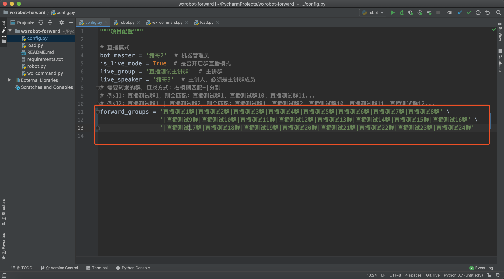

原文连接:https://www.cnblogs.com/pig66/p/12049385.html
很多人传言微信网页版（https://wx.qq.com/）接口已经被封了，所以所有的微信都不能登录网页版，这是错误的。
2019年7月微信对网页版微信进行了动态安全策略调整，导致一大批微信号不能登录网页版，但有些微信老号还是可以登录网页版的，具体哪些微信号可以登录哪些又不能登录，这个目前暂不了解！
微信机器人项目我们之前已经写过四篇了：
- [Python创建微信机器人]：详细讲解如何使用
wxpy库创建微信机器人。 - [如何用机器人监听老板微信？]：监听群成员聊天信息做转发。
- [python实现微信消息防撤回]：讲解微信撤回消息的原理并实现将撤回消息转发。
- [超详细Pycharm部署项目视频教程]：详细讲解如何将微信机器人项目部署到Linux服务器上。
以上文章可关注微信公众号：裸睡的猪 ，查看！
今天我们来学习微信机器人系列的第五篇：多群转发做同步图文直播！
一、背景介绍
猪哥一年前在建Python学习群的时候就说过，要邀请企业大佬来学习群做直播。
其实文章早就写好了，但是一直没有找到好的转发软件，所以耽搁了几个月。
最近猪哥感觉不能再拖了，所以就考虑自己开发一个多群直播项目，使用原来我们做的微信机器人项目。
需求很简单：能做到24个微信大群（共万人）同步转发就可以！
相信很多公司企业也会有同样的需求吧！
二、功能设计
如何做多群直播呢？简单的就是用机器人做二级转发：
- 新建一个直播主讲群
- 将三个机器人和主讲人拉进群里
- 主讲人发到群里的消息机器人都自动转发到群里
- 机器人转发完毕后在主讲群回复
- 继续发消息
为了大家便于理解，猪哥画了一个简单的设计图：
根据上图设计，我们这次功能设计有4个主要元素：主讲群、主讲人、转发群、机器人管理员。
三、功能实现
1.加载直播4个元素
根据上面的设计图，我们得知首先需要一个直播主讲群，然后直播群里个主讲人，然后还需要加载需要转发的转发群。
这些信息我们都可以在写在一个配置文件里面。
然后我们在机器人启动的时候，调用加载配置文件的方法，而加载配置文件的方法又去调用加载直播信息的方法！
首先是加载机器人管理员，然后在方法中间去调用加载群信息的方法！
下面是load_live方法的详细代码，主要做三件事：加载主讲群、检查主讲群里是否有主讲人、加载直播群。
def load_live(bot):
"""加载直播需要的群"""
# 设置开关
bot.is_live_mode = config.is_live_mode
if not bot.is_live_mode:
return '\n未开启直播模式，可在 config.py 文件中将 is_live_mode 设置为True开启！'
live_status_detail = ''
# 1、加载主讲群
live_group = bot.groups().search(config.live_group)
if len(live_group) < 1:
bot.live_group = None
bot.is_live_mode = False
return f'\n主讲群：未找到群名包含「{config.live_group}」的主讲群！\n开启群直播失败！\n\n可在主讲群中发任意消息，然后管理员使用命令：开启群直播模式，从新加载直播信息！'
elif len(live_group) > 1:
bot.live_group = live_group[0]
live_status_detail += f'\n主讲群：找到多个群名包含「{config.live_group}」的主讲群，默认选取第一个群（{live_group[0]}）作为主讲群!'
else:
bot.live_group = live_group[0]
# 2、加载主讲人
live_group_members = bot.live_group.members
for member in live_group_members:
if member.name == config.live_speaker:
live_status_detail += f'\n主讲人：「{config.live_speaker}」'
bot.live_speaker = config.live_speaker
break
else:
live_status_detail += f'\n主讲人：主讲群内未找到主讲人「{config.live_speaker}」。\n开启群直播失败！'
bot.is_live_mode = False
return live_status_detail
# 3、加载转发群
forward_groups = search_groups(bot, config.forward_groups)
bot.forward_groups = forward_groups
live_status_detail += f'\n转发群：消息将会转发至这些群：{str(forward_groups)}，共{len(forward_groups)}个。\n\n如有遗漏可在这些群中发任意消息，然后管理员使用命令：开启群直播模式，从新加载直播信息！'
return live_status_detail这里我们就加载完了直播需要的4个要素：机器人管理员、主讲群、主讲人、转发群。
2.实现转发消息
所需要的信息都加载完毕之后，我们就可以来开始做转发了。
大概的思路是：
- 定义一个接收群消息的方法
- 接收到群消息就判断这条消息需不需要转发，判断条件是：开启直播模式+当前消息是主讲群内的+发消息的人是主讲人
- 如果满足上诉三个条件，则将消息转发到群里
- 转发完毕在主讲群内回复：一转发完毕，这时主讲人就可以讲下一句话
我们来看看代码吧

我们再来看看wx_command.remote_forward(msg)的具体代码吧！
def remote_forward(msg):
"""转发消息"""
forward_groups = []
for group in msg.bot.forward_groups:
msg.forward(group, suffix='')
forward_groups.append(group.name)
time.sleep(random.random())
return forward_groups这个方法很简单，循环遍历需要转发的群，然后一个一个发送，发送完毕后有一个一秒以内的随机停顿，这是为了防止消息发送过于频繁导致消息发不出去。
这里关于多群转发的代码就完成了，下面我们就可以开始测试了。
四、测试
1.测试流程
代码写完我们就可以开始测试了，测试的整体思路就是：
- 新建一个主讲群，然后将机器人和主讲人拉进去
- 新建 24个测试群，把机器人拉进去
- 启动项目，让机器人进入直播模式
- 主讲人在群里模拟真实的直播，注意控制直播速度
- 直播完毕，关闭机器人
2.一个机器人转发24个群
猪哥在最开始的时候是想的是：用一个机器人，然后转发到24个群里，配置文件大概是这样：

但是发现这样会导致消息发不出去，微信提示消息发送过于频繁。
消息怎么发都发不出去，到这里猪哥几乎要放弃了，以为不能多群转发呢。
3.三个微信转发24个群
猪哥就去网上看看有没有免费的转发软件，然后看了看wetools（一款基于windows的微信运营工具），发现他们付费版的一个微信最多也就可以转发9个群。
于是猪哥猜想是不是一个微信最多只能转发9个群呢？那我用三个微信做转发不就可以吗？
上面的配置文件意味着我需要启动三次程序，换三个微信，然后每次更换forward_groups配置。
很多同学还不知道：PyCharm一个项目如何做到同时多次运行？
用三个微信转发24个微信群，看起来是个不错的想法，实践起来是不是可以成功呢？
本次直播测试差不多播了30分钟，完全正确的运行无消息丢失和机器人掉线。
期间发送过：文字、图片、文件、语音。
五、实际直播
24个微信大群同步直播，说实话之前很少有一个人能完成的，我咨询了很多以前做过群直播的同行，他们基本都是人工复制的方式。
但是，直播前一天顺利测试，给了猪哥很大的信心！
实际直播的流程大概是：
- 提前几个小时修改公告发布晚上群直播消息
- 禁止拉新人入群，防止拉发广告的进来
- 提前半小时打卡，直播结束后随机踢出几名未打卡占坑的群成员
- 直播前5分钟停止打卡，开始准备直播
- 晚20:00准时开始直播
- 大概20:40直播结束，收集大家反馈意见

因为当时直播，忘记截图24个群的未读消息图，只能找点聊天记录截图给大家看。
六、遇到的问题
其实直播的代码很简单，也不多，但是因为群多，用户体量大所以难免会遇到很多问题，下面猪哥就总结一下遇到的问题：
- 最大转发群数问题：最开始猪哥想的是只用一个机器人转发到24个群里，但是消息发不出去，被提示消息过于频繁，最后是看到wetools上他们的最大转发群数是9个，所以才考虑到使用三个微信，每个转发8个群。
- 转发模式问题：之前是一个机器人，主讲人直接发给转发机器人，后来变成三个机器人，如何发送消息给三个机器人呢？在朋友的提示下采用了主讲群转发模式。
- 加载不到群问题：有时候启动项目后会加载不到你想要的群，这时候需要在群里发送任意消息，再重新开启直播模式，就可以了，切记！切记！
- 在实际直播中有个机器人掉线问题：测试过程中未出现机器人掉线，但在实际直播中出现过一次，重新登录这个机器人就好了。
- 很多微信都不能登录网页版微信：这个确实很头疼，找几个能登录网页版的还真不好找。
当然上面讲述的都是一些技术上的问题，关于直播过程中出现的操作问题，比如：停止打卡后仍然有人打卡影响阅读、直播速度过快、内容不够浅显等问题就不一一列出了，如果你想详细了解这些细节可以加猪哥微信了解。
七、总结
近些年，我们guo家慢慢由“中国制造”演变为“中国创造”，这是一件艰巨而振奋人心的事情。
对于我们做技术的也是如此，工作中很多Ctrl+C(V)操作，不正是我们理解的“制造”嘛！
将技术应用于生活，去解决出现的一些痛点和难题，创造一些有趣的事情，我认为这才是真正的技术创造！
在解决自己遇到的问题的同时也解决了别人的困难，也许这时，机遇正向你走来！
获取源码，关注微信公众号：裸睡的猪，回复：微信机器人